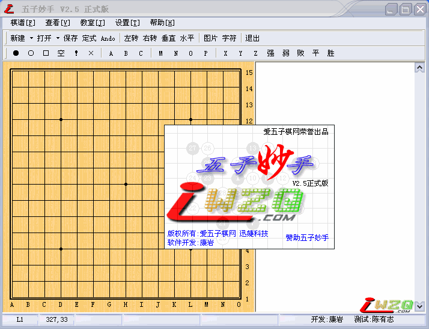

五子妙手2.5正式版发布
#1 五子妙手2.5正式版发布作者：有志青年 发表时间：2007-4-18 21:53:50
V2.5 正式版 新增功能
1.软件改名为：五子妙手 更新的新图标，更改了新界面
2.兼容iWZQ网站的风格界面
3.修改了不能打开网站打包棋谱的bug
4.修改了一些小BUG
5.棋盘可以无限缩放任何大小
6.支持导出POS,SGF格式文件

修正版近期发布，请各位多提修正意见。
注意：修正版是对当前版本的修正，而不会添加新功能，软件开发是一个有计划的长期过程，后续新功能正在开发中。
#2 Re:五子妙手2.5正式版发布作者：逆刃 发表时间：2007-4-18 22:12:23
坐个沙发先。这么好的东西！先下载用用看！有问题再向楼主反映好了·！
#3 Re:五子妙手2.5正式版发布作者：逆刃 发表时间：2007-4-18 22:27:30
好像不能打开LIB谱哦？怎么没有多谱模式啊？
#4 Re:五子妙手2.5正式版发布作者：行云流水 发表时间：2007-4-19 10:51:53
看看.谢谢#5 Re:五子妙手2.5正式版发布作者：joanhe 发表时间：2007-4-19 12:25:41
看看
#6 Re:五子妙手2.5正式版发布作者：星辰 发表时间：2007-4-19 20:20:21
还可以把！
#7 Re:五子妙手2.5正式版发布作者：wsnbba 发表时间：2007-4-20 15:11:14
看看.谢谢#8 Re:五子妙手2.5正式版发布作者：tongli 发表时间：2007-4-21 20:26:02
怎么下载呀
#9 Re:五子妙手2.5正式版发布作者：7分帅气 发表时间：2007-4-22 7:31:06
下来 看看 谢#10 Re:五子妙手2.5正式版发布作者：祈盼 发表时间：2007-4-24 19:15:55
呵呵。。。好呀！^_^用者自知#11 Re:五子妙手2.5正式版发布作者：max 发表时间：2007-4-26 16:25:37
下来先看看，好了继续顶。#12 Re:五子妙手2.5正式版发布作者：catman 发表时间：2007-4-30 23:21:20
支持国产的哈哈~~~~~~~#13 Re:五子妙手2.5正式版发布作者：希望成为高手 发表时间：2007-5-2 2:15:25
厉害啊 辛苦拉#14 Re:五子妙手2.5正式版发布作者：西山落叶 发表时间：2007-5-2 22:03:14
是好东西,顶一下.#15 Re:五子妙手2.5正式版发布作者：西山落叶 发表时间：2007-5-3 12:19:21
谁能告诉我这个怎么用啊?#16 Re:五子妙手2.5正式版发布作者：z40631 发表时间：2007-5-3 14:35:58
不错啊#17 Re:五子妙手2.5正式版发布作者：手留余香 发表时间：2007-5-3 15:38:20
头一次进来,就看到有这么个软件,下载看看.#18 Re:五子妙手2.5正式版发布作者：青发伊凌寺 发表时间：2007-5-5 22:02:24
我下了,怎么不能用啊?好像说什么不能调用.搞不懂,试一下再说.谢谢啊.#19 Re:五子妙手2.5正式版发布作者：zzxbow 发表时间：2007-5-11 17:36:37
第一次到来.下来看看#20 Re:五子妙手2.5正式版发布作者：梓风 发表时间：2007-5-14 9:08:59
下来看看，谢谢
#21 Re:五子妙手2.5正式版发布作者：二十七刀 发表时间：2007-5-18 12:34:39
呵呵
#22 Re:五子妙手2.5正式版发布作者：啊杰 发表时间：2007-5-28 19:45:26
怎么下？#23 Re:五子妙手2.5正式版发布作者：最近有点烦 发表时间：2007-6-2 18:32:45
打开拆解时,没图啊!
#24 Re:五子妙手2.5正式版发布作者：pp6688 发表时间：2007-6-2 22:18:29
呵呵。。。好呀！^_^用者自知#25 Re:五子妙手2.5正式版发布作者：阿云 发表时间：2007-6-4 18:47:42
五子妙手2.5正式版发布
好, 谢谢 !!!
#26 Re:五子妙手2.5正式版发布作者：王者星 发表时间：2007-6-8 13:43:08
试下先， 没办法#27 Re:五子妙手2.5正式版发布作者：破军 发表时间：2007-6-8 16:14:10
谢谢，辛苦了。有不懂的再来向大家请教。
#28 Re:五子妙手2.5正式版发布作者：sblisb 发表时间：2007-6-23 13:35:20
试用一下，谢谢了
#29 Re:五子妙手2.5正式版发布作者：云开 发表时间：2007-6-24 7:37:57
还不会用
#30 Re:五子妙手2.5正式版发布作者：普通会员 发表时间：2007-6-27 16:31:11
请问下 支持ＶＩＳＴＡ吗#31 Re:五子妙手2.5正式版发布作者：可是 发表时间：2007-6-29 12:40:16
ok#32 Re:五子妙手2.5正式版发布作者：z2cj 发表时间：2007-7-9 14:52:03
好！ 谢谢楼主#33 Re:五子妙手2.5正式版发布作者：ipqcel 发表时间：2007-7-10 19:51:57
用了2.1版，现在试试2.5版。#34 Re:五子妙手2.5正式版发布作者：龙旋风 发表时间：2007-7-10 20:33:05
顶一个，谢谢了#35 Re:五子妙手2.5正式版发布作者：一辉 发表时间：2007-7-12 22:29:40
好东西，学学看#36 Re:五子妙手2.5正式版发布作者：maxwen 发表时间：2007-7-23 12:40:58
下来看看！是电脑对战吗？
#37 Re:五子妙手2.5正式版发布作者：无尽 发表时间：2007-7-23 15:34:11
怎么菜单栏有个Ando的选项?...
#38 Re:五子妙手2.5正式版发布作者：惊人影迷 发表时间：2007-8-1 15:15:22
好东东#39 Re:五子妙手2.5正式版发布作者：风之铃音 发表时间：2007-8-6 20:42:14
这么好的东西！先下载用用看#40 Re:五子妙手2.5正式版发布作者：龙望艾 发表时间：2007-8-11 9:47:03
谢谢楼主
#41 Re:五子妙手2.5正式版发布作者：qpzyp 发表时间：2007-8-18 5:47:55
看看.谢谢#42 Re:五子妙手2.5正式版发布作者：飒啦啦 发表时间：2007-8-30 12:59:11
刚下完，准备研究一下。呵呵
#43 Re:五子妙手2.5正式版发布作者：小小浪花 发表时间：2007-9-9 4:58:25
看看。。。。。。。。。。。。。。#44 Re:五子妙手2.5正式版发布作者：logkey 发表时间：2007-9-23 11:17:35
新注册就能下载，谢谢！
#45 Re:五子妙手2.5正式版发布作者：上官行云 发表时间：2007-10-11 18:17:48
拿去用了
#46 Re:五子妙手2.5正式版发布作者：阿莲 发表时间：2007-10-13 10:58:10
菜鸟报到，什么是五子妙手阿？